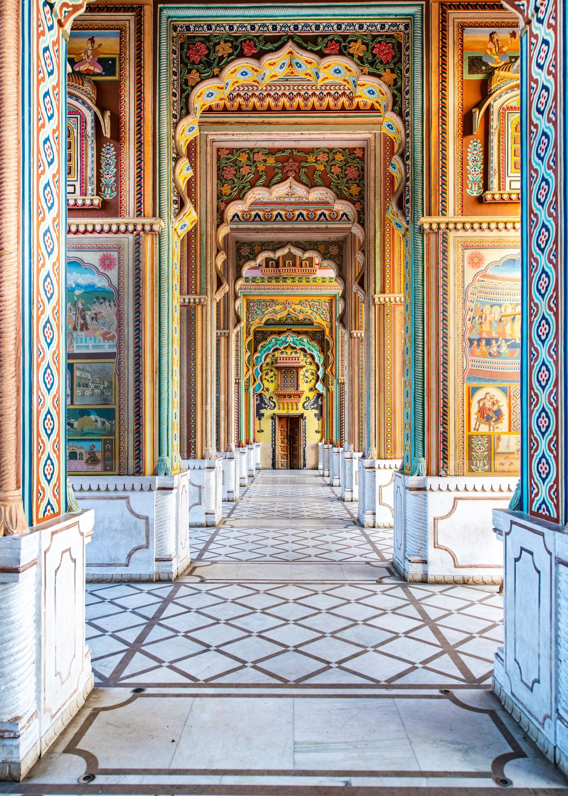
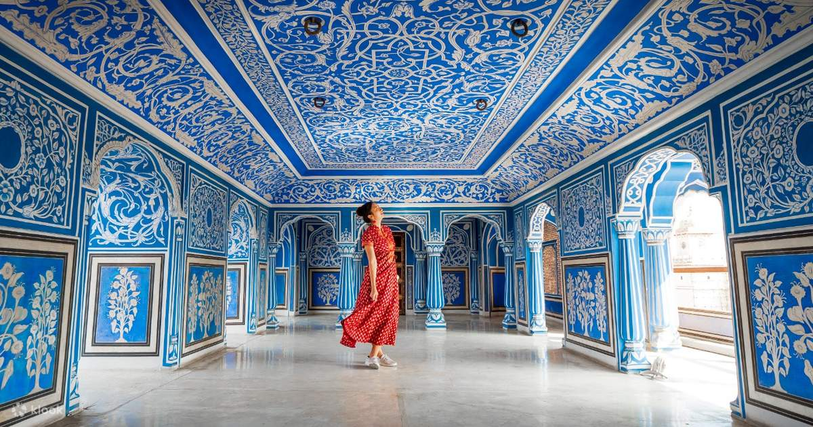

About Us
- Introduction
- Jaipur is the capital city of Rajasthan.
- it is probably known for the Pink City because many building are printed pink.
- It was founded in 1727 by Maharaja Sawai Jai Singh II.
- Jaipur is the part of Golden Triangle tourist circuit.
- History
- Founded by Mahraja Sawai Jai singh II.
- One of India's first planned city.
- Designed by architect Vidyadhar Bhattarya based on Vastu Shastra principles.
- Famous Attractions
- Hawa Mahal
- Amber Fort
- City Palace
- Janter Mantar
- Jal Mahal
- Nahargarh Fort
- Albert Hall Museum
- Culture
- Traditional folk dances like Ghoomar and Kalbeliya.
- Rich heritage of music and art.
- Colorful festivals such as Teej, Gangaur, and the Jaipur Literature Festival.
- Food
- Dal Bati churma
- Ghewar
- Pyaaz Kachori
- Laal Maas
- Mirchi Vada
- Mawa Kachori
- Shopping
- Johari Bazaar
- Bapu Bazaar
- Tripolia Bazzar
- Blue pottery
- Bandhani and Leheriya fabrics
- Best Time to Visit
- October to March
- Pleasant weather for sightseeing.
- Interesting Facts
- Called the Pink city since 1876.
- Jantar mantar in UNESCO World Heritage Site.
- Jaipur became a UNESCO World Heritage City in 2019.


